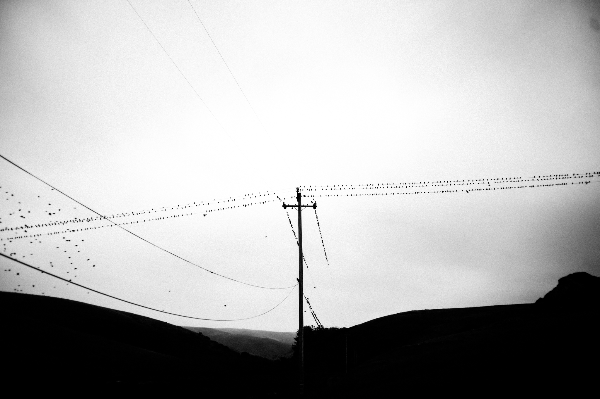

5/10/17

This photo that I have posted is technically refered to as a monochromatic picture. It is a black and white piccture. However, as us humans are trichromatic, there are many other colors that we are able to see. Dogs see this way. I bet other animals also see in solely in black and white. However, the point of this is not to make a list of the animals who see in black and white, but how I can relate it to what I see when I walk around. Some people say we are two-faced creatures. On the outside we can present ourselves however we wish. Dress in any colors we want. Wear whatever we want on the top of our heads, on our arms, even put permanant ink on our bodies. We are free to express ourselves however we want. But, there comes a point where all this ties into a superficial appearance. There comes a point in everyones life when they no longer are oblivious to there appearance outside. I rememember when I started to care about how I looked in public. It was a weird transition. I bought weird shoes, wore some weird t-shirts; I tried to look like someone who I thought was cool. At that time it happened to be skateboarders. So the Etnies shoes with the white long socks and the ripped t-shirt and pants. It wasn't overdone, it was just enough. However, as I grow up, I learn more and more that it is not about what you wear. It is how you speak, and what you say. Unlike the picture above, my world is trichromatic. I can see color. I can see what other people are trying to hide behind their clothing, makeup, whatever it is (at least I think I can see some of it.) Turns out we are much more complex than the colors that we see. Bees are supposedly tetrachromatic which means that they see color that we can't even fathom. Unlike bees, we are not able to see what really makes up the person who we are talking to. It is like they are just an idea in our head that we try to comprehend, but will never, ever be able to. It is like a logarithmic equation. We get so close to 0, but it will never be enough to find out what makes a person, a person. Just keeps on approaching until we are "close enough". Will it ever be possible for me to figure out why someone does something? Or vice versa? I can try and explain my actions, but after all is said, I'm just an ordinary man who does most things out of habit or instinct. -Bjorn